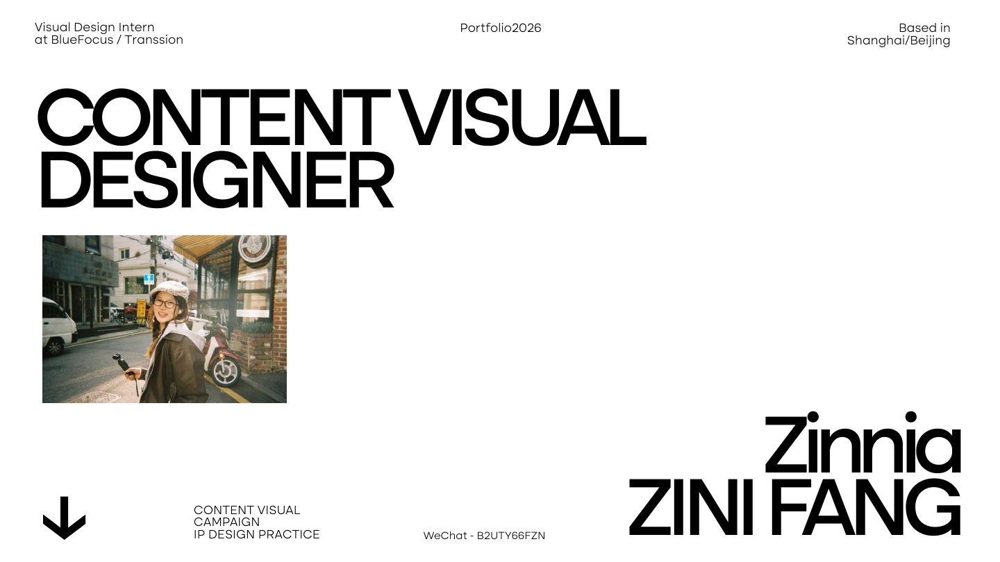

Content Visual / AIGC Workflow / IP Design
Portfolio 2026
方紫妮，内容产品视觉设计方向，聚焦品牌 Campaign、IP 视觉系统、AIGC 设计提效与商业视觉落地。
Open PDF( About )
CONTENT VISUAL DESIGNER
WITH CAMPAIGN THINKING.
27 届应届生，曾在 BlueFocus 与 Transsion 参与视觉设计实习。作品集覆盖品牌 Campaign、 IP Design Practice、AIGC Workflow 与商业视觉生产，强调策略转译、视觉执行和跨团队落地。
- Based in
- Shanghai / Beijing
- Role
- Content Visual Designer
- Experience
- BlueFocus / Transsion
- Contact
- 15083991592@163.com
6M
Commercial Practice
10+
Brand Campaigns
100+
Visual Deliverables
3+
Workflow Outputs
( Campaign )
Brand Campaign
and Visual Narrative
( IP Design )
Lookee IP Visual System
将角色定位、世界观、视觉识别、Prompt System、情绪动作矩阵和内容触点串成完整 IP 资产链路。点击任意页面会打开原始 PDF 对应页，避免网页缩略图遗漏信息。
( Workflow )
Design Efficiency
and Production System
( Visual Works )
Commercial Visual
Works Index
按 PDF 中 01-06 六个视觉作品小节建立入口；点击任意开屏页进入原始 PDF 对应页。
( Archive )